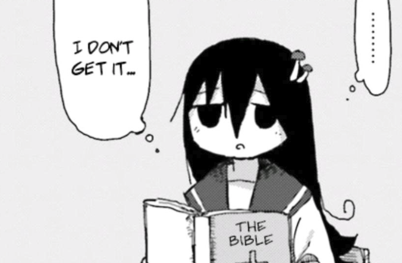

Reviews
Welcome to my reviews page. Here I share short, concise reviews of the media that I consume. Any particularly lengthy reviews are shared within the articles section.
Books
Lolita - Vladimir Nabokov (10/10)
Rating: 10/10
Probably the top contender for my favourite book of all time. I have never come across better prose. Relentlessly beautiful and captivating, and yet utterly sick and twisted all at once. A genius depiction of the unreliable narrator, and a fascinating and important foray into a perverted mind.
Few books have caught my interest from the very first sentence and held it to the very last, but this, Nabokov's literary masterpiece, certainly has. A must-read for any lover of literature.
I think that his other books fall short, comparatively. Lolita has various predecessors in relation the subject of hebephilia, but they do not measure up, and I am yet to read Pale Fire.
A Grief Observed - C.S. Lewis (10/10)
Rating: 10/10
I don't know if I've ever been as deeply emotionally affected by a book as I was by this one. Absolutely amazing; I'd say it's mandatory reading, especially considering it's a work by Lewis which I wish got more love and attention, but I understand that it's so heavy that some people can find it difficult to read.
I think it's something everyone should read at least once in their life when they feel able to do so. Incredibly profound reflections on grief, love, marriage, faith, despair, hope, endurance, and more. Any Christian that endures hardship will find this useful, and any human being, Christian or not, will find his raw, genuine expressions of the experience of grief impactful and transformative. At least, I don't see how they couldn't.
The Screwtape Letters - C.S. Lewis (9/10)
Rating: 9/10
Witty, clever, engaging, funny, and poignant. Every friend I've recommended this book to has loved it and found it to be a very easy read, and I think it's a great introduction to Lewis' works. Probably the best I've read so far by him.
The presentation of his ideas and observations via a fictional dialogue conveyed through letters as opposed to other more standard narrative structures was refreshing to read.
He's a wonderful writer, providing food for thought for both those new to Christianity and those who have been immersed in Christian thought and literature for their entire lives. I always feel I've come away with something important to mull over from his books.
The Four Loves - C.S. Lewis (8/10)
Rating: 8/10
One of Lewis' works that I find myself referring to the most within my daily life. His exploration of love through a Christian lens based on the four Greek words for love is fascinating, and many of the analogies he provides act as direct parallels to many of the situations I've found myself in personally.
The start can be a bit dense for some, but it's definitely worth persevering. I find all of Lewis' writing incredibly easy to read in large chunks, and he always delivers both complex and simple concepts with great skill and clarity.
Convenience Store Woman - Sayaka Murata (7/10)
Rating: 7/10
A much-needed, vital insight into the mind of what seems very overtly to be an autistic female protagonist. As an autistic person, I found this book refreshing and relatable, and I believe it serves a very valuable purpose for this form of representation alone — although, I won't pretend that's all the book can be judged on, however nice it may be to see.
Aside from any musings one may have on autism specifically, however, the book itself provides thought-provoking insights into Japanese culture and society, our perceptions of what 'normal' is, and also what we must do to see our lives as worthwhile or valuable. Is simply working a part-time job and living a quiet, structured life not 'valid'? If so, why not?
I would rate this book higher if I hadn't felt the plot meandered needlessly at times, in the way I often feel Japanese literature does. Good themes and ideas, but the actual execution isn't often as streamlined as one would hope for.
To Kill a Mockingbird - Harper Lee (7/10)
Rating: 7/10
Something I've read three times now, and reread recently because the school book club I run decided to pick it. I didn't dislike the book by any means, but I'm giving it the rating I am because there's nothing particularly extraordinary about it. The prose is alright, if a bit dull at times. The story itself provides fairly interesting criticism on issues of morality, prejudice and the justice system, and its core message about empathy is poignant.
In the end, it's not that it doesn't stick with me, because it does, but it doesn't stick with me enough to warrant any greater rating or acclaim.
In other news, Atticus Finch is now the hallmark in our book club for a 'good person'.
Atonement - Ian McEwan (5/10)
Rating: 5/10
I enjoy descriptive prose as much as the next person, so long as I feel it serves some larger purpose — and, really, I did look for it in Atonement. I studied it extensively for my English Literature course, in fact. I am aware of its various themes, and the points it attempts to make, and it was a relatively easy read; ultimately, however, it never struck home in the way I believe the author probably intended it to.
The vivid descriptions of environments within World War Two and the variety of perspectives served as an engaging novelty for a while, but when all was said and done, I felt like I had to force myself to look for substance that wasn't always there.
I enjoyed the author's probing into the concept of literature itself, and what it means to be a writer, but otherwise, the characters lacked substance and the story was predictable.
Not inherently an awful book, but not one I deem fascinating or incredibly commendable, either. I wouldn't recommend it to anyone who doesn't adore historical settings.
Life of Pi - Yann Martel (4/10)
Rating: 4/10
I didn't necessarily dislike reading this book, but upon reflection, a lot of the writing was very self-indulgent, and the ham-fisted religious and philosophical ideas it attempts to present aren't exactly subtle or, generally, effective at all.
The protagonist's strange beliefs about God were never really sufficiently explained, and the ending left me with more questions than answers, which to an extent is good in that it provokes discussion and critical thought, but it ultimately felt lazy more than anything.
I thought it was grandiose, also. 'This story will make you believe in God' — well, if I didn't already, it certainly wouldn't have convinced me.
I had a degree of fun reading it and discussing it with friends in the book club I run, but in most all categories it just doesn't hold up against other books, and it doesn't seem to achieve what it sets out to do. It was mainly frustrating and disappointing.
The Lover - Marguerite Duras (4/10)
Rating: 4/10
I wanted to enjoy this a lot more than I did. I thought it was going to be a deeply emotionally-driven story with clearly complex characters and lyrical streams of consciousness. I suppose, on the surface, those aspects are present, or I can tell the intention for them to be is there, but they're almost impossible to feel any effect from. Something about the prose makes it fall flat. Repeatedly, I could sense the author was trying to say something profound, but it was as if she said so much in such a tedious way that she ended up saying nothing at all.
It was hard to feel any emotional response to the characters or feel invested in them, and whenever the author did include descriptions of their intense emotional states, they felt abrupt, jarring, and out of place. The characters felt difficult to understand, contrived, and difficult to connect with.
The narrative was sloppy (seemingly intentionally so), but not in a way that evoked the dreamlike or hazy kind of effect that I think Duras intended. Instead, I felt confused, frustrated, and tired reading this. The lives of her characters, their personalities, and their plots became muddled and incoherent rather than impactful. Rapid shifts between geographic locations and timelines abound, but a sense of direction or substance? That appears much more difficult to find.
I feel I can tell what this was attempting to be, because I've read other examples of it, but it didn't deliver. I don't feel I gained anything special from reading this; rather, all I received was a sense of frustration.
Movies
12 Angry Men (1957) (10/10)
Rating: 10/10
I don't usually watch many new films nowadays, since I usually tell myself it isn't particularly productive (I tell myself I should be creating rather than consuming), but there are a lot that I have downloaded on my computer from whenever I used to watch movies regularly. 12 Angry Men is one among a few (The Perks of Being a Wallflower, The Shawshank Redemption, Mary and Max, The Man from Earth, The Prince of Egypt, The Before Trilogy, et cetera) that I find myself rewatching rather frequently. I never feel unproductive after watching them, since they provide me with so much to think about.
One of the reasons I love 12 Angry Men so much is because it takes place almost entirely in one room, allowing the great (more subtle than usual) acting and dialogue writing to shine through clearly. From one relatively simple concept (that is, the deliberation of a jury), viewers are prompted to think about so many profound questions: the dangers of democracy and also its triumphs; whether or not narrow-minded, stubborn and misguided people can truly be encouraged to think critically and look past their prejudices; whether or not it is naive to hold hope in humanity; how one intelligent and well-spoken person can shape the minds of many; the dangers of not taking a stand and following the herd; the dangers of allowing ourselves to fall prey to hopeless cynicism; the power of collaboration — and so much more. This thought-provoking nature actively discourages mindless consumption, stirring up an act of creation in viewers in the sense that they are encouraged to actively construct their own opinions based on the arguments they're provided. That's why I think it feels so rewarding to watch.
The Man from Earth is another film of this kind, and so is My Dinner with Andre. Sure, extravagant cinematography has its place and can add a great deal to a movie (for example, in Her), and films with lots of different settings do provide a different and often valuable kind of experience, but I find these one-room films often offer me even more food for thought that far more visually-impressive films do. The focus goes almost solely into the script-writing, and it pays off immensely.
A Streetcar Named Desire (1951) (9/10)
Rating: 9/10
I studied the text for this play for approximately a year before ever watching the film adaptation. The story and script are wonderful to begin with, and the actors in this adaptation bring it to life excellently. The casting is great, even if the acting can seem unusual or off-putting (especially for modern day viewers) at first, partly because the characters are supposed to be so extreme and dramatic in their portrayals. They're caricatures, almost — they seem over-exaggerated at first, but their purpose is to reveal a greater, more universal truth, and they're good at it.
Whilst Blanche's behaviour and Vivien Leigh's acting in this film can seem 'over the top', I think she reflects and represents a lot of the ways in which real people do respond to emotional distress very well, even if they're not often present in such an overt or extreme way. Her escapist tendencies and insecurities are all incredibly real behaviours that I and the people I've met have exhibited often, in varying degrees.
There are many profound statements and monologues in this film, and it's a worthwhile watch for anyone who is interested in reflecting on how human beings cope with trauma, respond to the realities of life and its hardships, and the complexity of human relationships.
I also really enjoy how it incorporates the shifting social norms and general zeitgeist of the time, and it's a great portrayal of how people from more 'refined' backgrounds can struggle to assimilate into seemingly harsher societies — and how they can struggle to even want to. There's a reflection on how neither approach is complete in and of itself (refinement for the sake of refinement makes one too fragile and potentially judgemental, but crudeness for the sake of crudeness can make one too cruel or thoughtless), and how a balance between two incredibly distinct ways of life likely ought to be struck.
It leaves you with a lot to think about, the way I think a good film should.
The Starling Girl (2023) (9/10)
Rating: 9/10
I've watched quite a few films that have attempted to reflect thoughtfully on the topics that this film tackles (religious trauma, repression, age-gap relationships, complex family dynamics, social norms and pressure, isolation), but none have done it quite so well. I wasn't sure what direction this was going to go in, but I was really pleased with where it went.
I felt like I was able to see a lot of myself reflected in the protagonist, and the quiet way in which conflict was explored through the dialogue and cinematography here was quite masterfully done. It felt real, not contrived. I was invested, and I felt challenged by the film's story itself. Films that allow for frequent silence and slow pacing in the way this film does do a great job at encouraging meaningful reflection and critical thought in the viewer, which I really appreciated.
There were a lot of visual and cinematic aspects that I enjoyed, also, but I fear discussing them would give way for too many spoilers, and I believe this film is worth going into without those. It's an important, necessary reflection on a great deal of difficult topics, and it handles them tactfully and in a way that feels raw, real, familiar, and yet innovative.
The ending surprised me, and was probably my favourite part of the film. It doesn't just deliver at the start, or in the middle — it's refreshingly poignant all the way through.
Anora (2024) (7/10)
Rating: 7/10
I wasn't anticipating rating this film so highly, but I had such a fun time watching it. I went to the local university film theatre near me on my own one night recently to watch this, and it made me laugh aloud so many times, along with the rest of the audience there. In spite of its vulgarity (that would generally offput me) and its sad story, it was funny — 'if you don't laugh, you'll cry'.
Another thing that I really loved about it was the ending. I won't spoil what it is, but what I liked the most about it was that it didn't feel cheap or unsatisfying. It was abrupt, to the point that the other people in the theatre with me didn't seem to know whether to stand up and leave or wait, but its abruptness added something meaningful to it. The director or writer could have taken the cheap, easy way out, turning it into another trite misandristic tale. Instead, it turned back in on itself, becoming crushingly human, if anything. Instead of being entirely man-hating like I was somewhat expecting it to be, it raised very real female issues in a meaningful way without putting down men in a universal manner as I see lots of feminist media nowadays do.
The ending felt so raw, so real, and so significant. It's one of the best endings I think I've seen in a film, and it was perfect for this movie. It was such an honest portrayal of the way that I believe the characters would have processed their emotional turmoil and situations if it had all been real life.
There are a lot of thought-provoking messages and scenes scattered throughout this movie. It was definitely one of the best cinema experiences I've had in a long time.
